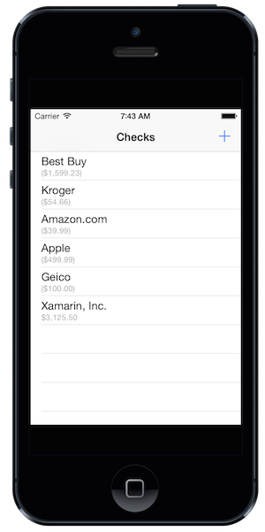
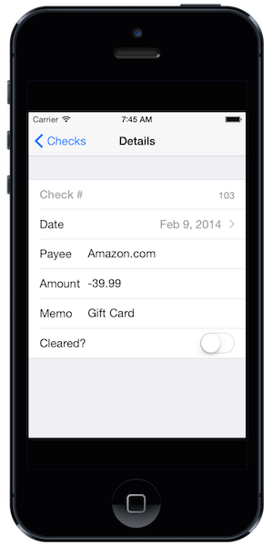
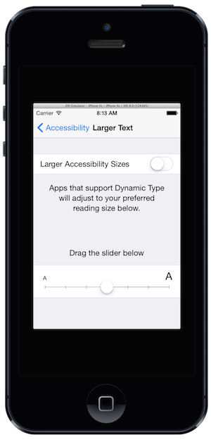
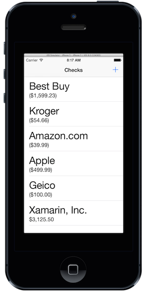
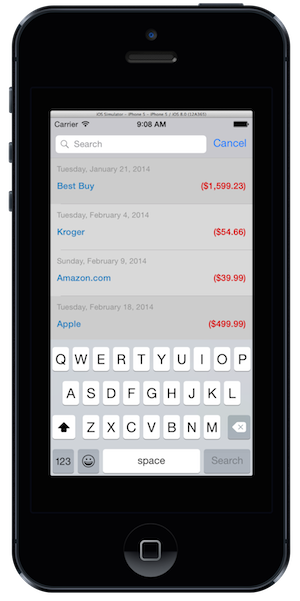
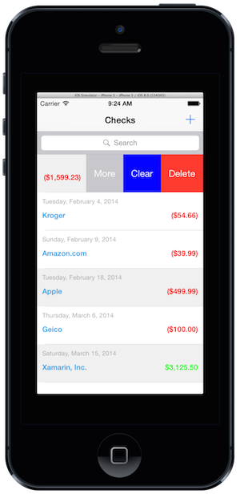

Exercise 1: Working with some of the new UIKit changes in iOS8
Duration
20 minutes
Lab goals
Our goal with this exercise is to explore some of the great new features in UIKit which have been added to iOS8. You will need the iOS8 SDK (included with XCode 6) as well as the latest Xamarin toolset which includes the iOS8 bindings.
You will start with an existing checkbook application that displays a set of editable checks using a UITableView.
|  |  |
Over the course of the exercise you will modify this application in several ways.
- Utilize dynamic Table View sizing so the application handles accessibility properly.
- Hide the Navigation Bar on swipe.
- Add in a
UISearchControllerto support searching. - (Optional) Add multiple actions through a Table View cell swipe.
Almost all of this work will be performed in the CheckbookViewController which is the main view controller used in the application. Since all of this is new, we will use a step-by-step approach in this exercise to accomplish each change.
Required assets
The provided Exercise 1 folder contains a starter project in the Lab.Start folder. It also has a completed version of this exercise for you to examine at the end if you want to see all the steps in finished form.
Steps
Open the starting exercise
Open the Checkbook.sln solution in the Exercise 1 / Lab.Start / Checkbook folder and examine the project. The primary files are explained below.

| Filename | Description |
|---|---|
Models/Check.cs |
Simple data class to represent a single check. You will not make any changes to this class. |
Models/Checkboook.cs |
Container class to manage a list of checks. You will not need to make any changes to this class. |
CheckbookViewController.cs |
This is the main view controller which displays the list of checks. It derives from UITableViewController and displays an editable table view, one row per check. |
CheckDetailsViewController.cs |
This is the details view controller that displays a single check and allows you to alter the data associated with it. You will not make any changes to this class, but it's worth looking at because it uses the DialogViewController to quickly create a Table View with editable cells.
|
CheckViewCell.cs |
This is a custom UITableViewCell which is defined in the main storyboard and expressed here in code. You will replace the existing cell display in the CheckbookViewController with this custom cell as part of the first goal.
|
SearchResultsViewController.cs |
This is a view controller which displays a set of search results. You will utilize this existing bit of code when you add in the UISearchController support.
|
Utilize dynamic Table View sizing
Our first goal is to turn on dynamic Table View sizing. We are currently using a standard UITableViewCell to render the rows in the table view, and it turns out that iOS8 automatically manages the sizes for us when you use the standard cells. To show this, let's change the text size.
- Build and run the application on an iPhone device or simulator.
- Tap the Home button (or Shift+Command+H on the simulator) to get to the main screen and open the Settings application.
- Navigate to General > Accessibility > Larger Text to change the font size. 
- Drag the slider to the right to make the font larger. You can make it even larger by toggling the Larger Accessibility Sizes switch.
- Switch back to the checkbook application and notice the text cells are all larger in response. 
Next, let's replace the default cell with a custom cell and see how it responds to the dynamic type requests.
- Open the
CheckbookViewControllerand locate theGetCellmethod, it should be around line 50 or so. - Comment out all the code which creates and fills in the cell details.
- Next, uncomment the block of code under the line
TODO: Step 1: use a custom cell.. Since we aren't concerned with the details of the custom cell itself, we'll just use this implementation. When you are finished, it should look something like: - Run the application again and notice that this version also has larger sized text. This is because of a new feature in iOS8 which is turned on automatically when you create an iOS8-based Storyboard. It involves setting two properties:
TableView.RowHeightmust be set toUITableView.AutomaticDimensionTableView.EstimatedRowHeightis a new property which must be set to an expected (normal) size for the row, for example:80.
ViewDidLoadoverride. Instead, they are both set in the Storyboard prototype cell. - Next, with the app running and change the font size again and switch back to the app. Does the font size change?
- By default, the Table View sets the font size up once, and once it's set we don't see any changes unless we refresh the data and set the font sizes in our
GetCellimplementation. To see the notifications, we have to subscribe to aNSNotificationCenternotification calledUIApplication.ContentSizeCategoryChangedNotification. - In the
GetCellimplementation, add the following lines to set the font sizes each time we render a cell - this will ensure we are using the current font size as it changes. Make sure to do this before you return the cell! - Scroll up in the source file to the
ViewDidLoadmethod and add the following code to subscribe to theUIApplication.ContentSizeCategoryChangedNotificationnotification and reload the table view in response: - Run the app again and try changing the font size as the app runs. Notice that it now properly resizes dynamically - and you only had to do a few steps to make it work. This is much improved over iOS7!
public override UITableViewCell GetCell(UITableView tableView, NSIndexPath indexPath)
{
var check = Checks[indexPath.Row];
// UITableViewCell cell = tableView.DequeueReusableCell("BasicCheckCell");
// if (cell == null) {
// cell = new UITableViewCell(UITableViewCellStyle.Subtitle, "BasicCheckCell");
// cell.DetailTextLabel.TextColor = UIColor.LightGray;
// }
//
// cell.TextLabel.Text = check.Payee;
// cell.DetailTextLabel.Text = check.Amount.ToString("C");
// TODO: Step 1: use a custom cell.
CheckViewCell cell = (CheckViewCell) tableView.DequeueReusableCell(
new NSString("CheckCell"), indexPath);
cell.DateLabel.Text = check.Date.ToString("D");
cell.PayeeText.Text = check.Payee;
cell.Amount.Text = check.Amount.ToString("C");
cell.Amount.TextColor = check.Amount > 0 ? UIColor.Green : UIColor.Red;
cell.BackgroundColor = check.Cleared ? UIColor.FromRGB(0xf0, 0xf0, 0xf0)
: UIColor.White;
return cell;
}
cell.DateLabel.Font = UIFont.PreferredSubheadline; cell.PayeeText.Font = cell.Amount.Font = UIFont.PreferredHeadline;
NSNotificationCenter.DefaultCenter.AddObserver( UIApplication.ContentSizeCategoryChangedNotification, n => TableView.ReloadData());
Hide the Navigation Bar on swipe
Next, let's turn on a new feature in UIKit which maximizes our screen space when we have a navigation bar.
- In the
ViewDidLoadmethod, set theNavigationController.HidesBarsOnSwipeproperty totrue. - Run the application and "swipe" up on the Navigation bar header. It should slide up, maximizing your table view's space.
- Pulling down on the table view will reveal the navigation bar, or you can navigate to and from the page to accomplish the same thing.
- There is also a
HidesBarOnTapproperty you can try out as well, although this isn't quite as easy to activate on a table view that supports selection.
Add in a UISearchController to support searching
One of the cool new features in iOS8 is a new UISearchBar controller which can be added to any view. It supports the ability to display search results live - so you no longer have to manage that support yourself. This feature replaces the existing UISearchDisplayController, although keep in mind that it's iOS8 only so if you want to continue to support older versions, you might want to stay with the existing display controller.
- Locate the
ViewDidLoadoverride in theCheckbookViewController. - Let's first create a View Controller to display our search results. We've already got one in the project (
SearchResultsViewController) - it uses a Table View and includes aSearchmethod which will filter the results appropriately. Instantiate one and assign it to a variable in the method. It takes theCheckbookViewControllerinstance (really just a parent) and the list of checks. - Next, we need to create a custom implementation of
UISearchResultsUpdatingwhich is the delegate interface used by iOS8 to request a search result update. You should implement the methodUpdateSearchResultsForSearchControllerand use the passed information to refresh the current list of results.- Add a new class to your project named
SearchResultsUpdater. - Add a public
eventto the class namedUpdateSearchResultswhich takes astringas the parameter. The completed lab uses anAction<string>delegate type. - Override the
UpdateSearchResultsForSearchControllermethod and raise the event in response, passing thesearchController.SearchBar.Textproperty to the delegate method. - Save and close the file.
- Add a new class to your project named
- Next, create an instance of your new
SearchResultsUpdater, and wire up the event to theSearchResultViewController.Searchmethod - this takes a string. - Finally we are ready to create our search controller. The constructor takes the view controller which will display the search results.
- Instantiate a new
UISearchController, passing it yoursearchResultsController. - Set the
SearchResultsUpdaterproperty on the search controller to yoursearchUpdater. - The last step is to add the search bar to the UI. We need to set the frame and assign it to the
TableHeaderViewfor our Table View. We also want to set theDefinesPresentationContextproperty totrueto indicate that child view controllers can overlay the current view controllers UI. Here's the code you need to add to the end of yourViewDidLoadmethod: - Run the application and try out the new search bar, notice how the search results are overlayed on top of the existing UI. 
- Try selecting a choice - it currently won't do anything. Let's fix that by implementing the
RowSelectedmethod in theSearchResultsViewControllerclass.- Get the selected
Checkfrom thevisibleCheckscollection using the passedindexPath. - Call the new
ShowDetailViewControllermethod on theparentViewController, passing a new instance of theCheckDetailsViewController(make sure to set theCheckproperty to display the selected check!) and the parent view controller. The code should look something like this:
- Get the selected
- Run the application again and try selecting a choice from the search results. It should now navigate properly to the details page - replacing your current view. Notice that you did not need access to the navigation controller!
var searchResultsController = new SearchResultsViewController(this, Checks);
SearchController.SearchBar.Frame = new CGRect(SearchController.SearchBar.Frame.X, SearchController.SearchBar.Frame.Y, SearchController.SearchBar.Frame.Width, 44f); TableView.TableHeaderView = SearchController.SearchBar; DefinesPresentationContext = true;
public override void RowSelected (UITableView tableView, NSIndexPath indexPath)
{
var check = visibleChecks[indexPath.Row];
parentViewController.ShowDetailViewController(
new CheckDetailsViewController() { Check = check },
parentViewController);
}
Add multiple actions through a Table View cell swipe
In this final step, we will add some new actions to the table view and show off the new iOS8 API to customize table view cell swipe actions.
- Open the
CheckbookViewControllerclass and override theEditActionsForRowmethod. This method is called when you swipe on a table view cell and it can return an array ofUITableViewRowActions to display, where each action has a:- Title
- Background Color
- Action function
-
Create three
UITableViewRowActionvariables to manage "Delete", "Clear" and "More" in the method using theUITableViewRowAction.Createmethod. This takes a style, name and delegate action to perform if the item is selected. Use the following as a guide and just use an empty delegate for now.- Delete should be a destructive style (it will be Red).
- Clear should be a Default style and have the
BackgroundColorproperty deliberately set to "Blue". - More should be a Normal style (it will be gray).
- Put all three variables into an array and return it from the method. The order determines the position of the button when you swipe - the first item in the array will be the right-most button.
- Next, override the
CommitEditingStylemethod - you don't need to provide any implementation, just pass it off to the base class, but the edit actions won't be active unless this method is overridden. - Run the app and swipe to the left on a cell. You should see your actions: 
- As a final challenge, see if you can implement the actions:
- Delete should remove the check from the array and delete it from the Table View.
- Clear should set the
Clearedproperty on the selected check. - More should display an action sheet using the new
UIAlertControllerclass. Add in some choices just to see how it works. - The completed sample has an implementation of this if you'd like to examine it.
Summary
In this lab, you explored and utilized some of the new iOS8 features available in UIKit on an existing application.
There is a completed solution in the Exercise 1 folder included with these lab instructions.